SINCERAMENTE
2024
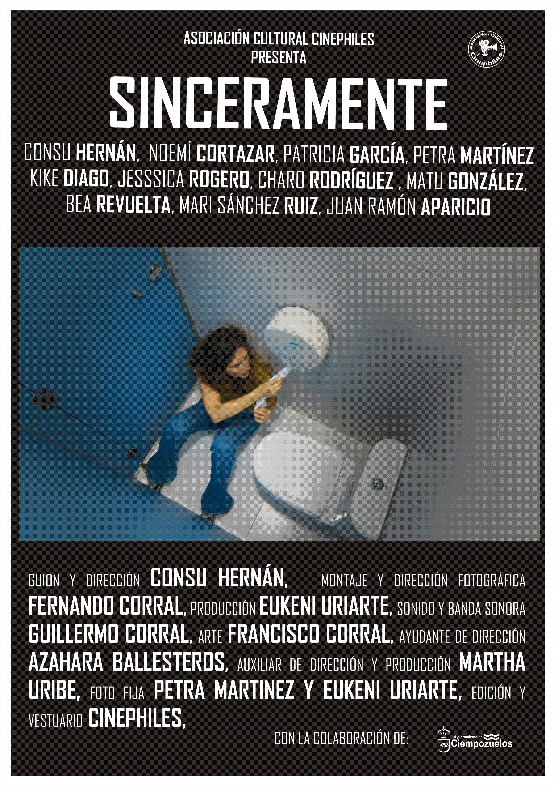
Sinopsis
Laura afronta uno de los días más tristes de su vida, pero nunca hubiera imaginado que el funeral de su padre se convertiría en un desfile de personajes carentes de sentimientos sinceros.
Ficha Técnica
- Dirección: Consu Hernán
- Guion: Consu Hernán
- Reparto : Consu Hernán, Noemí Cortázar, Patricia García, Petra Martínez, Kike Diago, Jessica Rogero, Charo Rodríguez, Matu González, Bea Revuelta, Mari Sánchez Ruiz, Juan Ramón Aparicio.
- Producción: Eukeni Uriarte
- Montaje: Fernando Corral
- Fotografía: Fernando Corral
- Sonido: Guillermo Corral
- Música: Guillermo Corral
- Ayte. Dirección: Azahara Ballesteros
- Aux. Dirección: Martha Uribe
- Arte:Francisco Corral
- Formato de rodaje: 6K, 24fps (BMPCC 6K)
- Ópticas: Sigma 18-35 f/1.8 | Sigma 50-100 f/1.8 | Tamron 12-16 f/2.8
- Edición y Color:DaVinci Resolve
- Duración: 12 minutos
Imágenes
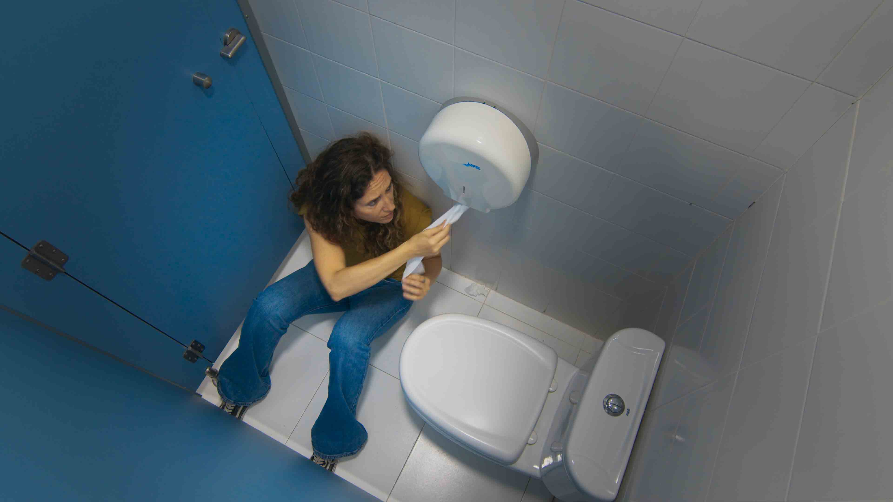
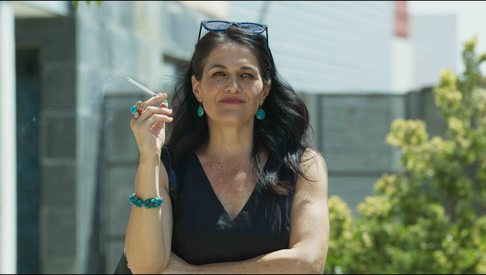
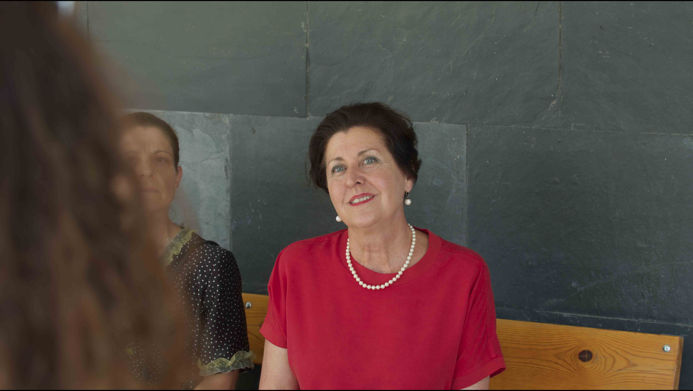
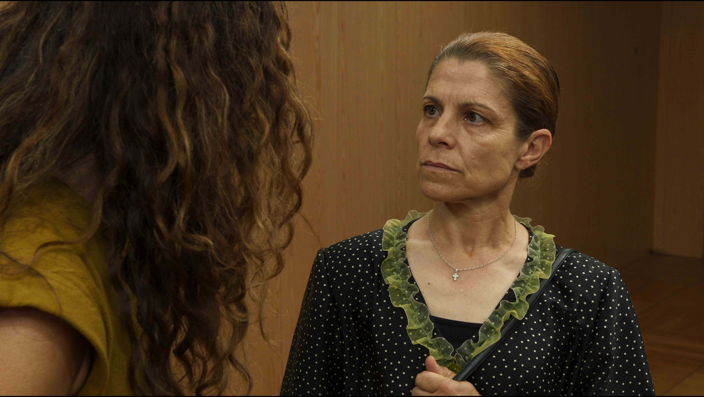
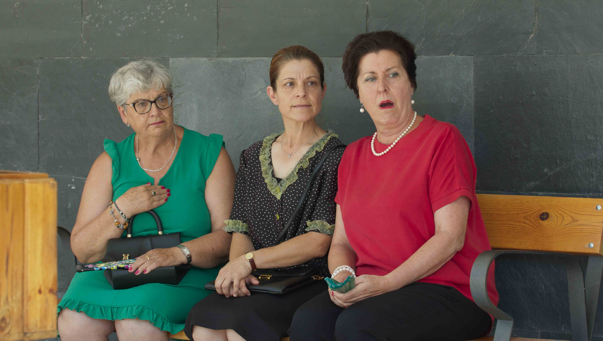
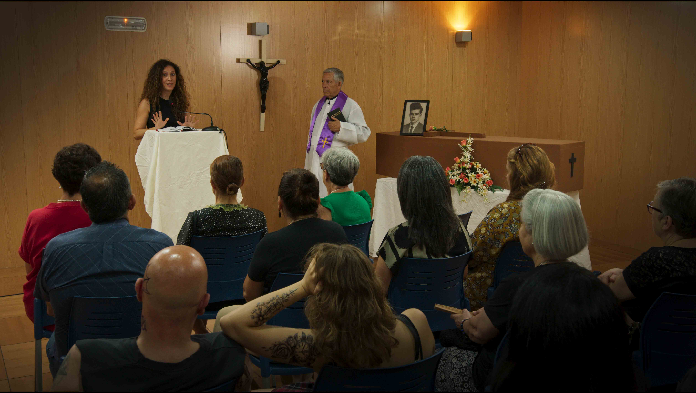
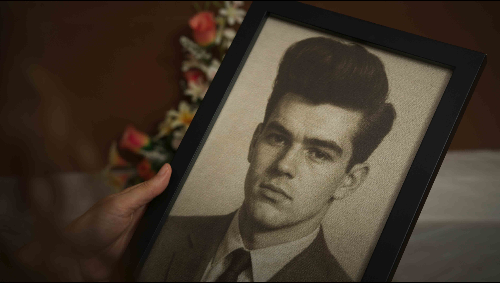
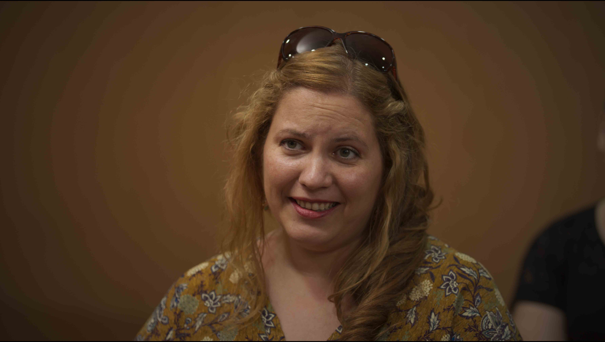
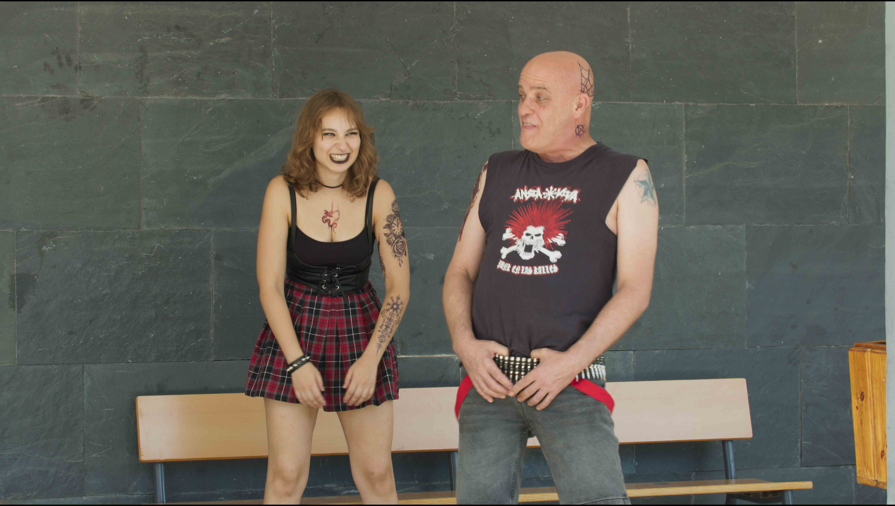
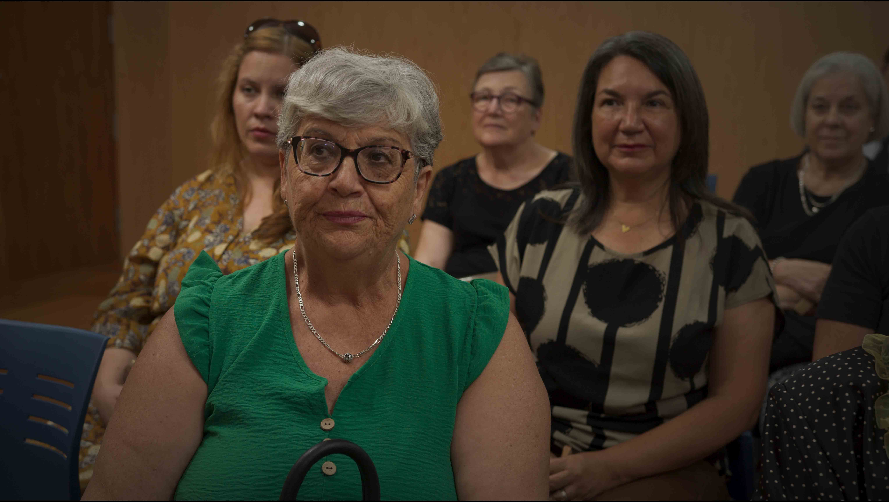
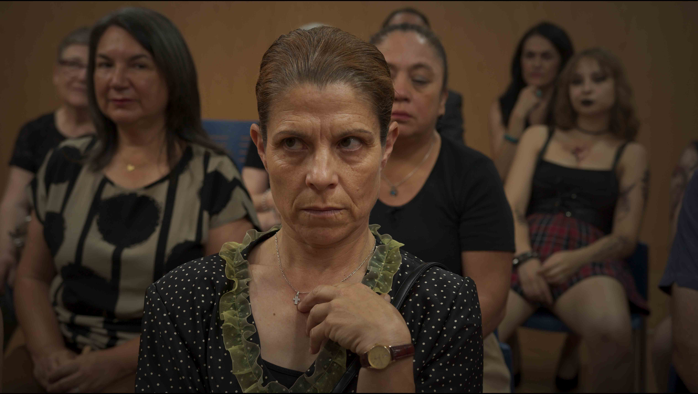
Making Of
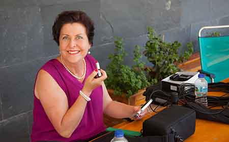
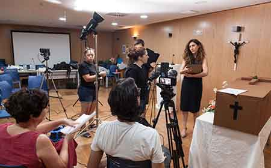
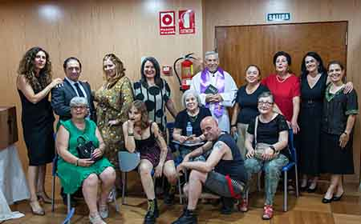
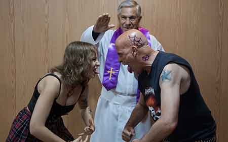
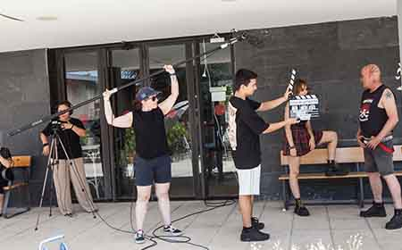
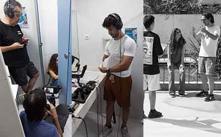
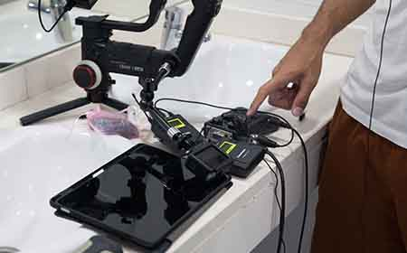
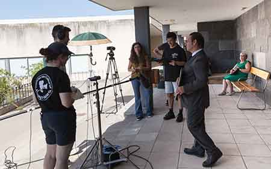
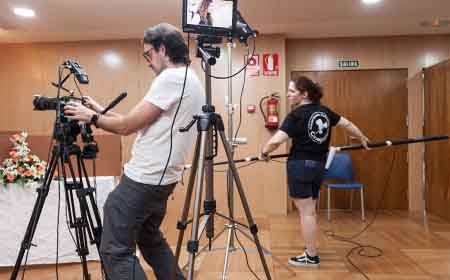